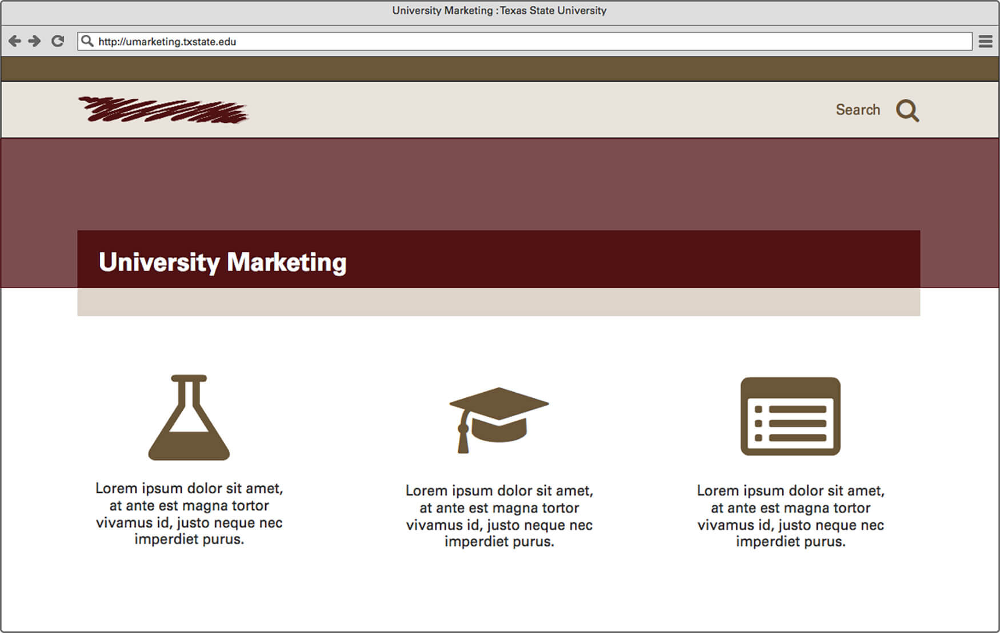
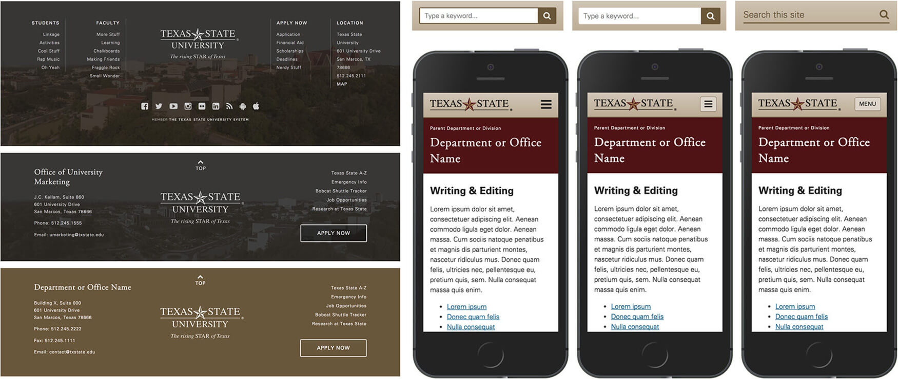
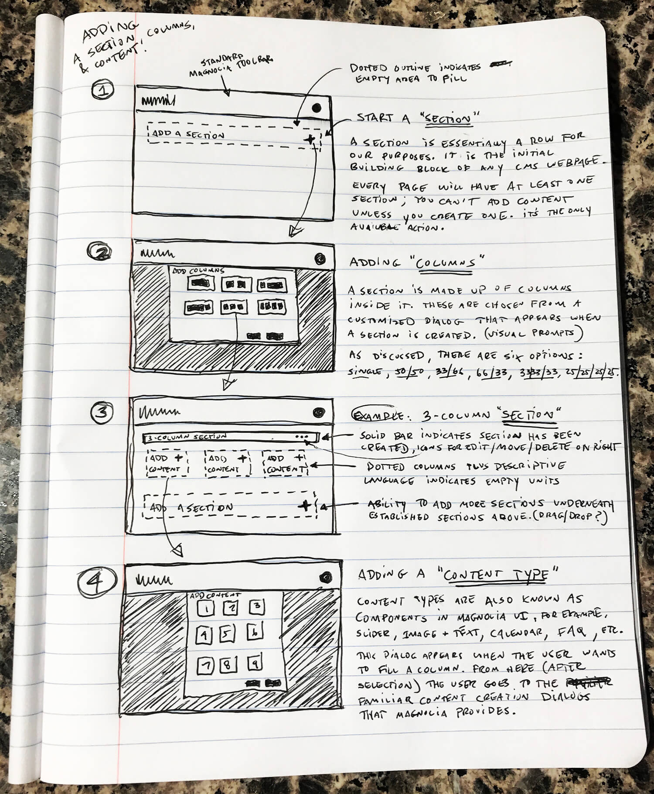
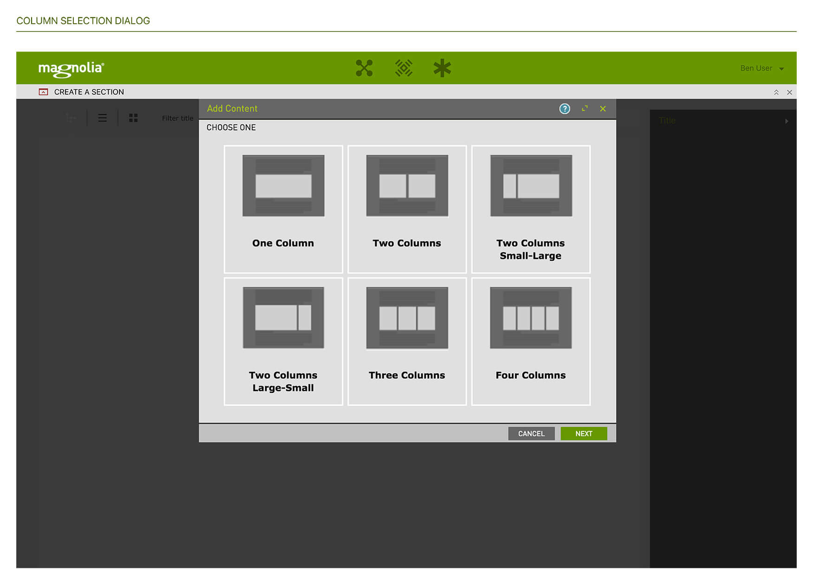
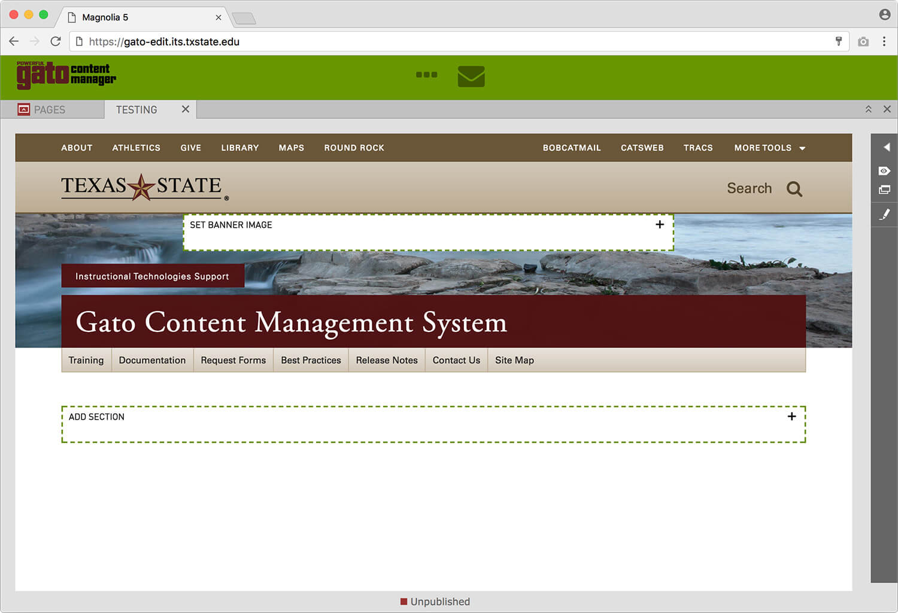
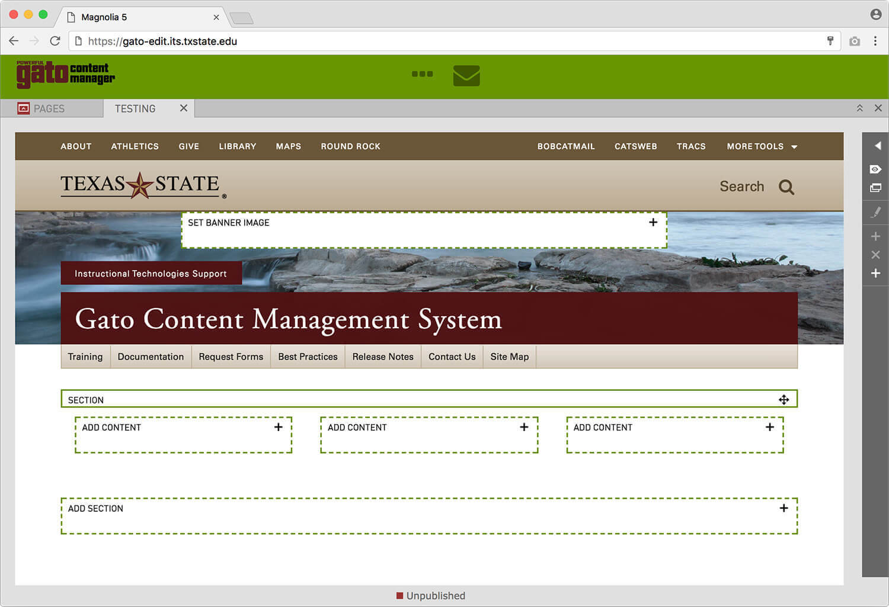
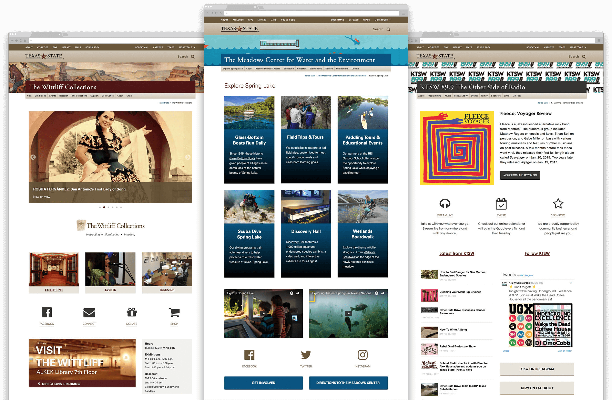

Overview
Pretty much every unit at Texas State – from the president, to human resources, to academic units and research centers – uses the CMS tools, template, and components I designed iteratively during 2015-2016.
Context
In the mid-2000s every Texas State unit converted to the Magnolia CMS, but rapidly changing technology and shifting priorities left the CMS largely unattended since 2009. It lacked web typography and multi-column layouts, and editors struggled to find compelling ways to convey information. Many were requesting to leave the CMS, or were hacking in overrides that were unmaintainable, inconsistent, and non-accessible.

Before: Biology homepage using the standard template in November 2014
Goals
- Add user-friendly multi-column layouts
- Create a responsive and accessible template wrapper
- Add key graphical content types (i.e. slider, icons, buttons) and photo libraries
- Modernize brand elements in a systematic fashion
- Strengthen team processes and user feedback loops
Process
Past digital projects were largely run by the school’s IT unit, with University Marketing contributing static graphics and brand oversight only. The complex scope of this endeavor called for new processes and collaboration methods, with the design side owning more aspects of the front end and CMS user experience than ever before – from user interviews, to hover effects and transitions, to breakpoints and application dialogs. Our lead developer and I recently discussed this transition on the RWD Podcast.
Focus groups
Texas State has 400+ websites and about 1000 decentralized editors, so there’s a lot of variation. To get a firm grasp on unit needs, and what editors expected from an updated CMS, I led a bunch of focus groups in March 2015. We reviewed a few popular content management systems, several inspirational higher education websites, and some preliminary mockups I built to solicit feedback on visual design and front-end behavior.
Focus group participants give feedback on the current state of the CMS
Initial template concept
Long before the idea to update the CMS template, I worked on a side project focusing on a new look and feel for the University Marketing website. The intention was not to scale to the entire campus, but rather to demonstrate concepts like accessible color, web fonts and icons, responsive design, and background video to departmental leadership. I did some quick sketches and then went straight to high fidelity demos.
After lots of good feedback, and reaching an institutional consensus on updating our web properties, I naturally built upon these initial designs.


Initial header concept and column-based layout mocked up in Balsamiq
Early hifi demo with background video, columns, and web fonts
Iterative prototypes
I expanded on the initial concept in a series of HTML/CSS prototypes from March to July 2015. Overall, we went through about half a dozen major design iterations before starting back-end development. To facilitate communication with stakeholders, developers, and focus group participants (who offered regular feedback on my progress), I organized the project on GitHub Pages.

Various header, sidebar, and footer prototypes
Progression of footer, menu button, and search bar
CMS user experience
Our most requested feature was the ability to make multi-column layouts without the need for external tools or coding knowledge. Magnolia didn’t have this capability baked in, so we had to design and build it from scratch. To keep things simple for users, I devised a limited, understandable grid system and some corresponding nomenclature for easy reference.



Early sketch of user flow for creating a multi-column webpage
Demonstrating section and content bars in various states
Visualizing the column selection dialog in higher fidelity
Live CMS showing section creation page
Live CMS showing an empty 3-column layout
Major improvements over previous design
- User friendly multi-column layouts
- Responsive design
- Graphical components added – slider, image banners, buttons, icons
- Strategic brand identity
- HTML/CSS color and text solutions
- Photo libraries deployed for content creators
Noteworthy features
Images
Texas State is known as “the most beautiful campus in Texas” and we wanted our websites to reflect that. So we incorporated background images into the header design, and added key components like a customizable slider, buttons, and iconography. To support the image needs these additions generated, our photographer and I curated a library of unmistakable Texas State banners and several other image galleries highlighting campus life, with access to these libraries baked right into the CMS.

A few headers utilizing our library of over 200 banner images
Mobile and desktop views of the slider component
Examples
We released the new template to users in January 2016.
In addition to designing for it, I was also a primary user of the CMS, managing the content for University Marketing, the president’s office, and the Texas State style guide. I’m also fond of these implementations from my peers:
- Human Resources
- Common Experience
- Housing and Residential Life
- The Wittliff Collections
- The Meadows Center for Water and the Environment
- KTSW Radio

Is it perfect?
Hahaha, no. It was a gigantic project, and while we certainly nailed it based on available resources, I would make some changes if I could:
- Too many button options: While our buttons are beautiful and thoughtful, we gave users too many choices, leading to over-reliance for layout purposes (instead of calls to action), lots of mixing-and-matching, and a lack of unity.
- No pre-filled page templates: Users are confronted with a blank page every time they start a new webpage in the CMS. This proved intimidating for many, but unfortunately it wasn’t an issue we could easily address.
- Vertical rhythm is not optimal: It’s hard getting the padding and margin correct on elements when you don’t know exactly how users will stack them. I really wish I had more time for this.